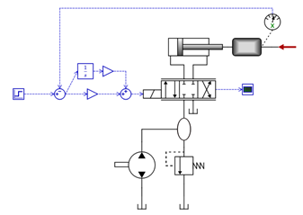

Sensitivity Analysis
Hopsan can perform Monte Carlo-based sensitivity analysis. This means many simulations are run of the same model, while one or more parameter(s) are changed randomly according to a normal distribution. With this method, it is possible to analyse how robust a model is for uncertainties in input data.
Step-By-Step Example
- Open the model, "Position Servo" (found under Help-Examples Models). In this example a hydraulic position servo with a PI-controller is used. We are going to analyse how the response of the servo is affected when the damping of the system is uncertain.

- Click the 'Sensitivity Analysis' icon. It is found in the simulation tool bar. It can also be accessed from the menus.
| Open Sensitivity Analysis Dialog |
- Choose which parameters to examine. In this example, we first choose the viscous friction coefficient, B, of the mass. Then we give it an average value of 1000 with a standard deviation of 500. This is used to define the normal distribution. Then we do the same for the damping factor in the control valve, with an average of 1.0 and a standard deviation of 0.5.
- Choose which output variables. In this example, we want to know how the step response of the position servo is affected when damping is uncertain. The dialog should now look similar to this:

- Now press the "Start Analysis" button. The model will be simulated 99 times with randomized damping parameters. When done, the results from all simulations will be plotted in one graph: